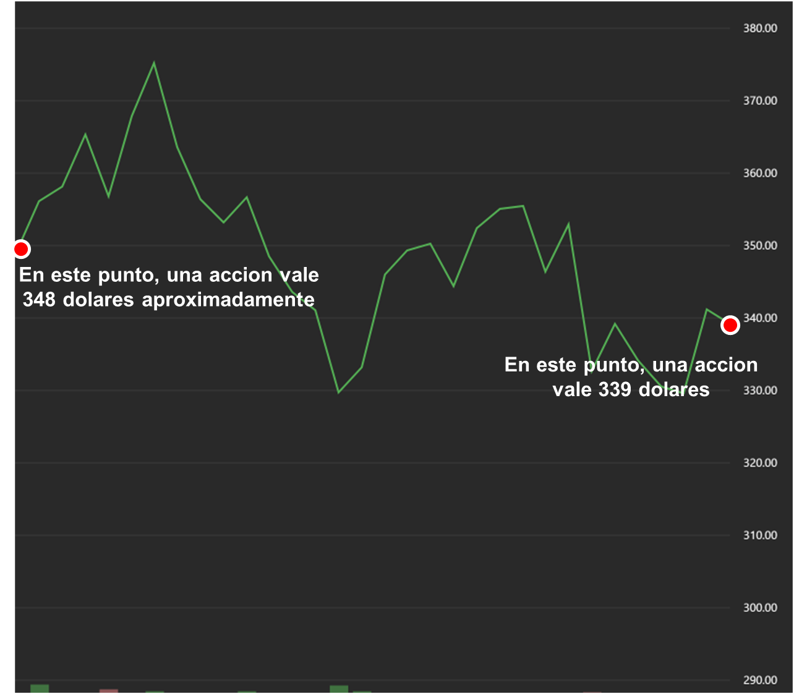
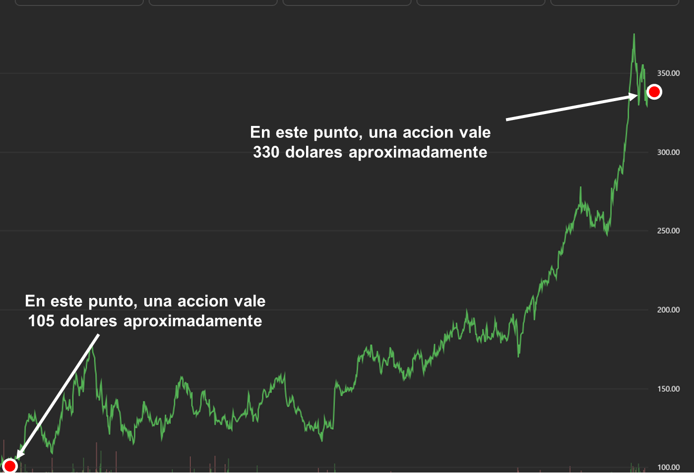

Opciones en Peru
Cuentas de alto rendimiento
Las cuentas de alto rendimiento son cuentas de ahorros que ofrecen una tasa de interés mucho mayor a la de una cuenta
"Sueldo" o "Simple", pero manteniendo la disponibilidad inmediata de tu dinero (a diferencia de un depósito a plazo fijo).
En que se diferencia de un Deposito a Plazo Fijo?
- Liquidez: En la cuenta de alto rendimiento puedes retirar tu dinero hoy mismo si tienes una emergencia.
En el plazo fijo, si retiras antes de tiempo puedes perder los intereses.
- Variabilidad: El banco puede cambiar la tasa de una cuenta de ahorros aunque normalmente avisan con 45 días de anticipación.
En el plazo fijo, la tasa queda "congelada" por todo el tiempo del contrato.
Vale la pena por lo siguiente:
- Vences a la inflación (o al menos la empatas): Mientras una cuenta común hace que tu dinero pierda valor, estas cuentas generan un retorno real.
- Funciona como fondo de emergencia: El dinero esta disponible y lo puedes sacar rapido (liquidez alta), es el lugar perfecto para tener tus ahorros para emergencias,
ganando intereses mientras esperas no tener que usarlos.
Algunas opciones en Peru son:
| Entidad | Cuenta |
|---|---|
| Caja Ica | Flexitotal |
| Banco Falabella | Ahorro Programado |
| Banco Alfin | Ahorro Altura |
| Banco Ripley | Ahorro Plus |
| Agora | AhorraMás |
NOTA: La TREA puedes verlo en las paginas oficiales de cada entidad financiera, no puedo ponertelos aqui ya que pueden cambiar.
Los bancos como Interbank, BBVA y Scotiabank tambien ofrecen tasas pero suelen ser escalonadas: a más dinero, más tasa. De igual manera te recomiendo revisar sus paginas
Renta fija (depositos y bonos)
Invertir en Renta Fija en el Perú es, en esencia, convertirte en un prestamista. Tú le entregas tu dinero a una entidad (el Estado o una empresa) a cambio de que
te lo devuelvan en un plazo determinado con intereses (por eso se llama renta FIJA).
Hay diferentes tipos de renta fija:
1. Deposito a Plazo Fijo: Son productos bancarios tradicionales. Tú dejas tu dinero en un banco, caja municipal o financiera por un tiempo (ej. 1 año)
y ellos te pagan una TREA.
Si quieres tu dinero antes, vas al banco y pides "cancelar" el depósito. El banco te devuelve tu capital, pero te castiga quitándote
casi todos los intereses ganados.
2. Bonos soberanos: Funcionan con cupones. El Estado te paga un interés fijo cada 6 meses, y al final del camino (ej en el año 10),
te devuelve el capital que invertiste originalmente.
Ejemplo: Inviertes 100 soles en 5 años, el Estado te paga 10 soles cada mes y despues de 5 años
te paga los 100 soles.
Son de largo plazo (5, 10, 20 o hasta 30 años). Los bonos se negocian en la Bolsa de Valores (BVL). Si necesitas tu dinero, no le pides el dinero
al Estado, sino que vendes tu bono a otro inversionista.
3. Letras del Tesoro: Se venden "al descuento". Por ejemplo, compras una letra que vale S/ 100, pero hoy pagas S/ 97. Al final del plazo,
el Estado te da los S/ 100 completos. Esos S/ 3 de diferencia son tu ganancia. No hay pagos intermedios.
4. Fondos mutuos de renta fija: Una gestora reúne el dinero de muchos inversores y lo diversifica en varios bonos y depósitos.
Es ideal para alguien que no quiere sustos y busca que su dinero crezca poquito a poco pero de forma constante.
Si hay fondos mutuos de renta fija, significa que hay diferentes tipos de fondos mutuos? Sí, y existen 2:
• Fondos mutuos de renta variable: Se compra acciones en bolsa
• Fondos mutuos mixtos: Una mezcla de renta fija y renta variable (ej. 50% bonos y 50% acciones).
Hay otros tipos de renta fija como:
- Factoring: Inviertes en facturas por cobrar de empresas. Es renta fija de alto rendimiento, pero con mayor riesgo operativo.
- Papeles comerciales: Deuda de empresas a corto plazo (máximo 360 días).
Estos tipos de renta fija son poco comunes y por ahora no necesitas aprender a invertir en ellos
Renta variable
Invertir en renta variable es, en esencia, comprar una pequeña parte de un negocio o proyecto con la esperanza de que crezca, sabiendo que el precio
puede subir o bajar según el mercado. A diferencia de la renta fija (donde sabes cuánto ganarás desde el inicio), aquí no hay una rentabilidad garantizada.
El riesgo es mas alto: Generalmente ofrece un mayor potencial de ganancia a largo plazo, pero con mayor volatilidad
(el precio puede caer drásticamente en un solo día).
Ejemplos de renta variable:
- Acciones: Compras una parte de una empresa como Nvidia, Alicorp, credicorp, etc. Tu ganancia viene de la subida del precio de la acción.
- ETFs (Exchange Traded Funds): Son como canastas de activos que cotizan en bolsa como una acción. Son renta variable si el ETF sigue un índice de acciones (como el S&P 500).
Sin embargo, existen ETFs de renta fija (bonos), por lo que depende de qué contenga el fondo.
- Fondos mutuos (de renta variable): Son como "paquetes" de acciones que te permiten ser dueño de pedacitos de muchas empresas con una sola compra.
Te has dado cuenta que los fondos mutuos y ETFs se parecen mucho? Aqui te explico sus diferencias:
| Caracteristicas | Fondos mutuos | ETFs |
|---|---|---|
| Donde se compran? | Bancos o administradoras | En la bolsa de valores |
| Precio | Se calcula una vez al dia | Cambia en tiempo real cada segundo. |
| Comisiones | Generalmente más altas. | Generalmente muy bajas. |
| Inversion minima | Puede ser desde montos bajos (ej. $100). | El precio de una sola "acción" del ETF. |
| Como se gestiona? | Un experto intenta "ganarle" al mercado. | Solo copian un índice (ej. las 500 más grandes). |
Que es un índice bursátil o simplemente "índice"?
Es un valor numérico que funciona como un termómetro para medir la salud de un grupo
específico de acciones en la bolsa. En lugar de mirar cómo le va a cada empresa una por una, el índice te da una foto general
de si ese "grupo" está subiendo o bajando de valor.
Por ejemplo, permite saber si al sector tecnologico le esta yendo bien o mal.
Los inversionistas lo usan para ver si sus propias inversiones están rindiendo más o menos que el promedio del mercado.
De seguro habras escuchado o visto "S&P 500" y "Nasdaq 100" en noticias o en algun otro lado, estos son los indices mas famosos:
- S&P 500: Agrupa a las 500 empresas más grandes y representativas de Estados Unidos (como Apple, Microsoft y Amazon).
- Nasdaq 100: : Se enfoca principalmente en las 100 compañías tecnológicas más grandes (siempre van cambiando, no hay 100 compañías fijas).
Acciones (se dueño de un pedacito de empresa)
Una acción es esencialmente una pequeña parte de la propiedad de una empresa. Al comprar una, te conviertes en accionista de esa compañía.
En otras palabras eres como un socio.
Las acciones pertenecen a la categoria de renta variable porque su rendimiento no está garantizado; el precio puede
subir o bajar según el éxito de la empresa y el mercado.
Muchos expertos sugieren empezar con ETFs para obtener una diversificación instantánea con poco dinero. Es decir, comprar varias acciones con una sola compra.
Como se gana o pierde dinero? Hay 2 formas:
1. Dividendos: Son una parte de las ganancias que algunas empresas reparten periódicamente (por ejemplo, cada 3 meses) a sus socios.
Es como recibir una "renta" solo por mantener la acción, sin necesidad de venderla.
2. Ganancia capital: Esta es la mas "emocionante", ocurre cuando vendes tu acción a un precio mayor del que pagaste.
Ejemplo: Compras una acción por $100 y meses después sube a $120. Si la vendes, habrás ganado $20.
Imaginate que en vez de subir mas bien cae $20. Entonces tu perdistes $20.
No te asustes con la imagen, es mas facil de "leerlo" de lo que parece.
Esta imagen es de la empresa Nvidia (desde enero hasta marzo):
En esta imagen va desde principios de enero hasta fines de febrero (casi 2 meses)

Si comprastes una accion completa en enero entonces para marzo has perdido 9 dolares pero no te asustes, a eso se le llama "riesgo" y es normal pero
debes saber algo:
A largo plazo (3 o 5 años) vas a ganar. Esa perdida de 9 dolares es solo una perdida imaginaria.
Si vendes la accion por el "miedo" de perder mas dinero, entonces esa perdida imaginaria de 9 dolares se convierte en una perdida real.
Ahora, veamoslo a largo plazo (5 años aproximadamente)

Si comprastes una accion en agosto del 2021 entonces para febrero del 2026 has ganado 225 dolares.
Si comprastes 2 acciones entonces habras ganado 450 dolares.
Lo ves? A largo plazo terminas ganando casi siempre
ETFs
Imagina que quieres invertir en el mercado tecnológico, pero no quieres comprar acciones de cada empresa por separado (Apple, Google, Microsoft, etc.).
En lugar de eso, compras una sola "participación" de un ETF que ya contiene trozos de todas esas empresas.
Hay diferentes tipos de ETFs: Algunas contienen acciones de empresas tecnologicos, otras de salud otras petroleras, otras automovilisticas, etc.
LA GRAN VENTAJA:
Si pones todos tus ahorros en una sola empresa (digamos, una tecnológica prometedora) y esa empresa tiene un escándalo contable o un producto fallido,
puedes perder el 50% de tu dinero en un día.
En un ETF que replica al indice S&P 500 (las 500 empresas más grandes de EE. UU.), esa misma empresa quizás solo representa el 2% del total. Si esa empresa quiebra,
tu inversión solo cae un 2%, lo cual es fácilmente compensado por el crecimiento de las otras 499.
LA DESVENTAJA:
Si hubieras comprado NVIDIA hace dos años, habrías multiplicado tu dinero varias veces (como vimos en el ejemplo anterior).
Si hubieras comprado un ETF tecnológico que incluye a NVIDIA, habrás ganado mucho, pero menos que con la acción sola,
porque el ETF también contiene empresas que no crecieron o incluso bajaron.
Fondos mutuos
Los fondos mutuos de renta variable son un fondo común donde muchos inversionistas ponen su dinero para que una administradora lo invierta
principalmente en acciones de empresas. A diferencia de la renta fija (como los depósitos a plazo), aquí no sabes exactamente cuánto vas a ganar.
Estás apostando al crecimiento y las utilidades de las compañías en las que el fondo invierte.
Históricamente, las acciones tienden a subir, pero en el corto plazo son como una montaña rusa. Valen la pena para ahorrar para la jubilación